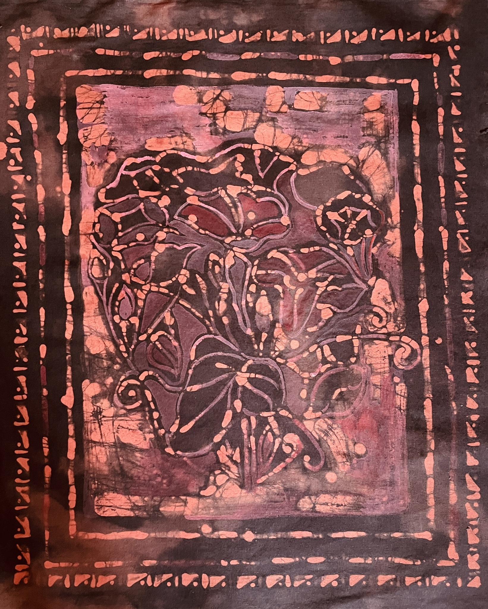

Welcome to Vol 11 of Bhavana Little Magazine!

| Edited by: The Bhavana Editorial Team|
| Deadline: Oct 15th, 2025 |
| Expected date of publication: Dec, 2025 |
Table of Contents
=================
1. A Review of "Home In the World", by Haimonti Dutta
2. A kaleidoscope of paintings, by Amika Kar
3. The Ravana Mask, by Amogh Keluskar, Agneya Pooleery, Haimonti Dutta, and Pallavi Keluskar
4. Sweet Potato Flowers, by Manoj Pooleery
5. Banana Flax Bread, by Haimonti Dutta
6. Preparing Natural Dyes with Avocado, by Haimonti Dutta
7. Tapestry: The geese (Batik), by Haimonti Dutta
8. Batik designs for T-shirts, by Haimonti Dutta
9. Fabric Paint T-shirts, by Haimonti Dutta
10. A trip to Shea, by Agneya Dutta Pooleery
11. Ornamental Paintings, by Haimonti Dutta